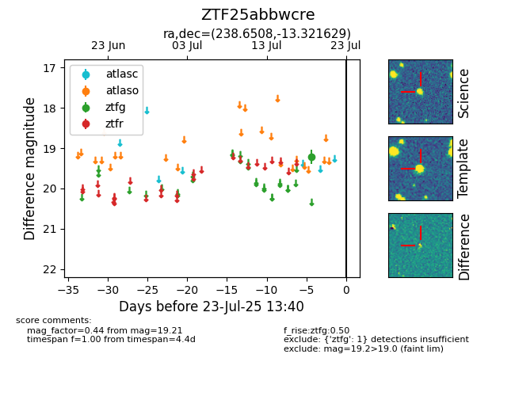

Target ZTF25abbwcre at 2025-08-06 17:27, see:
FINK: fink-portal.org/ZTF25abbwcre
Lasair: lasair-ztf.lsst.ac.uk/objects/ZTF25abbwcre
ALeRCE: alerce.online/object/ZTF25abbwcre
alt names
ZTF25abbwcre (ztf,fink)
coordinates:
equatorial (ra, dec) = (238.6508,-13.32163)
galactic (l, b) = (356.5210,+29.92069)
photometry
last atlaso=18.39, ztfg=19.21
1 atlaso, 1 ztfg detections
